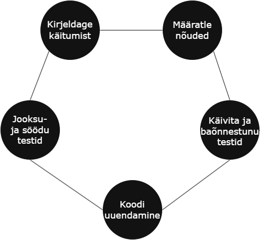
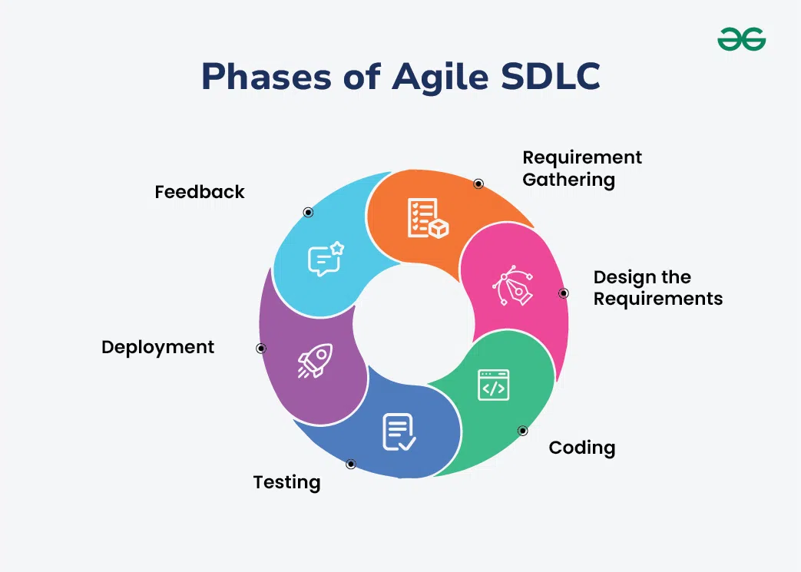

Agiilne arendustsükkel on tarkvaraarendusemetoodika, mis tõstab esile kiiret ja paindlikku lähenemist tarkvara loomisele ja
abistab meeskondadel regeerida igasugustele vajadustele ja keskondadele. Selle metoodika eesmärk on pakkuda väärtust
tarkvaratoodete arendamise kaudu, keskendudes samal ajal inimeste koostööle, iteratsioonidele ja pidevale
parandusele/arendusele.
Agiilses arenduses on tarkvaraarendus tsükliline, tarkvaraarendusprotsess jaotatakse lühikesteks iteratsioonideks, mida
nimetatakse sprintideks. Iga tsükkel keskendub konkreetsele funktsioonile või väärtusele, mis on täiuslikult rakendatud ja
testitud, enne järgmist tsüklit. Meeskonna liikmed peavad olema omavahel tihedas suhtluses, probleemide lahendamiseks,
koostöö tegemiseks ja määratud eesmärkide täitmiseks.
Agiilset arendust, sarnaselt tarkvaraarenduse valdkonnale, kasutatakse ka projekteerimisel, turunduses, personaljuhtimiseses
ja paljudes muudes valdkondades, kus paindlik ja kiire protsess on kriitiline.
Agiilse arendustsükkli esimene etapp mis prioriteerib uurimist ja projekteerimist. Selle etappi käigus meeskond läheb laiali ja
võivad samalajal tegeleda mitme erineva projekti konspekteerimisega. Iga konspekti tuleks põhjalikult analüüsida selleks, et
saaks arusaamine võimalikutest äri võimalustest ning kindlaks teha kui kaua ja kui palju tööd projekti lõpetamiseks vaja läheks.
Selle analüüsi põhjal saab hinnata tehnilist ja majanduslikku teostatavust ning otsustada, milliseid projekte tasub prioriteerida.
Pärast projekti valimist tuleb selgeks teha missuguseid nõudeid projekt vajab selle lõpule viimiseks. Selleks saab kasutusse tuua
vooskeeme või kõrgtasemeliseid UML-diagramme mis demonstreerivad kuidas projekti funktsioonid peavad töötama ja kuidas need
olemasolevasse süsteemi mahuvad.
Seejärel jaotatakse projektile meeskonna liikmeid ja ressursse ning luuakse ajakava või ujumisraja protsessikaart mis näitab
millal mingi töö peaks sprindi jooksul valmima.
Kui meeskond on koostanud esialgse sprindi nõuded, võttes arvesse huvirühmade tagasisidele ja nõuetele, algab töö. UX-disainerid ja
arendajad alustavad tööd projekti esimese iteratsiooniga, mille eesmärk on saada sprindi lõpuks töötava toote. Kuna toode läbib mitu
ülevaatamisvooru, seega võib esimene iteratsioon sisaldada väid minimaalseid funktsioone. Meeskonnal on võimalik korraldada täiendavaid
sprinte, et toodet tervikuna täiustada.
Eelmisest etappist saadud tulemusest tuleb enne väljastamist läbi teha jägrmised käigud:
See etapp nõuab tarkvara versiooni jätkuvat toetust. Meeskond peab tagama süsteemi sujuva tööd ja näitama kasutajatele kuidas seda
kasutada. Tootmietapp lõppeb, kui toetus on lõppenud või kui väljalase on kavas kasutuselt kõrvaldada.
Toetuse lõpu etappis lõppeb süsteemi versiooni tootmine, tavaliselt siis, kui süsteem asendatakse uuema versiooniga või kui süsteem
muutub üleliigseks, vananenuks või vastuolus ärimudeliga.
Tarkvaraarenduse meetod mis soodustab kõigi osapoolte koostööd, et määratleda süsteemi soovitud käitumine enne arenduse algust. BDD hõlmab
spetsifikatsioonide kirjutamist loomulikus keeles, mis on arusaadav nii tehnilistele kui ka mittetehnilistele meeskonnaliikmetele. See julgustab
koostööd meeskonnaliikmete vahel, luues selge ja arusaadava probleemi mõistmiseks. Selle arendustsükkli jooksul teeb meeskond koostööd, ärindus
meeskond kirjutab üles süsteemi nõudeid, arendajad loovad tarkvara ning kvaliteedi kontrolli rühm tagab, et kõik läheb plaani järgi.
BDD testimine on tarkvaraarenduse lähenemisviis mis keskendub süsteemi käitumisele lõppkasutaja perspektiivist. Seda kirjeldatakse stsenaariume
domeenispetsiifilise keele (DSL) abil, mis on kergesti mõistetav nii tehnilistele kui ka mittetehnilistele meeskonnaliikmete.
BDD elutsükkel on kerge, järkjärguline protsess, mille abil luuakse kasutajale ja ettevõtte vajadustele vastav tarkvara.

DDD prioriteerib disainipõhist arendust mis toob esikohale kasutajakogemust, muutes disaini tootearenduse juhtmõtteks, mitte järelmõtteks. See tagab,
et toode vastab lõppkasutaja ootusele, vähendades muudatusi ja kiirendades turule toomist. Toote disain ja funktsionaalsus vastab pigem tegelikele kasutaja
vajadustele kui oletatavatele soovidele. DDD-ga seotud raskusued tulenevad välimuse ja kasulikkuse tasakaalustamisest, disainerite ning organisatsiooniliste
silode navigeerimisest. DDD töötab samm-sammult teostamisega mis tagab kasutaja jäämine arendusprotsessi keskmesse. See toimub järgmiselt:
Domeenipõhine disain (DDD) on meetod, mis seab esikohale tarkvarasüsteemi toimimise konkreetse probleemvaldkonna mõistmise ja modelleerimise. See nõuab
tihetat koostöö järgi domeeni ekspertidega, et saada põhjalik ülevaade domeeni detailidest ja keerukusest. DDD pakub põhialuseid, skeeme ja meetodeid mis
aitavad arendajatel domeeni konspektsioone tarkvaradisaini täpselt tabada ja esitleda. Domeenipõhilise disaini kasumid on:
Turvaline disain (SD) on tarkvaraarendusemetoodika mis nõuab, et turvalisus oleks süsteemidesse integreeritud algusest peale mitte pärast süsteemi valmimist.
Selle asemel, et turvalisus hiljem paigaldada uuendustega keskendatakse turvanõuete integreermisele otse arhitektuuri endasse, lisades turvameetmed juba riistvara
tarkvara ja teenuste projekteerimise alguses. SD lähtub turvalisust disainipiiranguna, mis on sama oluline joudluse, kasutusmugavuse ja kuluga, vastuolus reaktiisetest
lähenemisviisidest, mis lähtuvad peamiselt turvaprobleemide haldamisele pärast rakendamist. Turvaline disain peab suutma ennetada rünnakuid, sest eeldatakse, et
süsteemid toimuvad ohtlikes aktiivsetes keskondades kus rünnakud on regulaarsed. See vähendab turvariske, näidates ainult vajalikke funktsioone, liideseid ja teenuseid.
Testipõhine arendus (TDD) on tarkvaraarendusemetoodika mis põhineb süsteemi testimisest ja parandamisest. Selle põhimõte on ebaõnnestuva automatiseeritud üksustasandi kirjutamine
ja seejärel piisavalt koodi lisamine, et test läbiks. Seejärel testkoodi ja tootmiskoodi ümberkujundamine ning kordamist uue testjuhtumiga. TDD etapid varieeruvad, kuid üldiselt on
need järgmised:
Aktsepteerimiskindluspõhine arendus (ATDD) on tarkvaraarendusemetoodika mis keskendub süsteemi tegeliku vajaliku funktsionaalsuse tagamisele. Automatiseeritud testid luuakse arendusprotsessi
alguses, mis võimaldab luua tagasisides abil toode mis vastab täielikult kasutajate ootustele funktsionaalsuse osas. See meetod toetab lihtsust, koostööd ja tagasisidet käimasoleva protsessi
kohta, pakkudes tihedamat vastavust toote ja kilendi vahel. ATDD on sarnane BDD-ga, kuid esinevad väikesed erinevused, BDD prioriteerib süsteemi käitumist ja ATDD kasutaja tegelike vajadustele.
ATDD tsükkel koosneb neljast etappist; arutus, distilleerimine, arendamine ja demo.
Arutus etapis tehakse kindlaks mida kasutaja vajab tootest arendusetappi lõppus. distilleerimis etapis võetakse arvesse süsteemi käitumist erinevates stsenaariumites. Arendamise etapis arendatakse
funktsioone, järgides Test First Development (TFD) lähenemist, kuni see on edukalt läbitud. Demo etapis esitatakse äripartneritele süsteemi demo ja alustakse Iteratsioonidega.
Jätkuv testipõhine arendus (CTDD) on tarkvaraarendusemetoodika, mis laiendab testipõhist arendust (TDD) automaatse testide täitmise abil tagaplaanil, mida nimetatakse ka jätkuvaks testimiseks.
Sellel meetodil kirjutatakse test esimesena kuid ei käivitata manuaalselt, vaid kasutatkse pidevat testimis vahendid, et automaatselt viia läbi test tagaplaanil. Selle abil vähendatakse aega mida
oleks manuaalselt testimisel raisku läinud.
Näitepõhine spetsifikatsioon (SBE) on tarkvaraarendusemetoodika mis põhineb tarkvaratoodete nõuete ja äriorientatsiooniga funktsionaalsete testide määramine koostöömeetod, kus nõuete kogumine toimub
realistlike näitetega mitte abstraktsete väidete abil. See meetod on eriti edukas nõuete ja funktsionaalsete testide haldamisel suuremahulistes projeltides, mis on olulise valdkonna ja organisatsioonilise
keerukusega. SBE mõeldud täpse arusaamise loomiseks ja vähendab oluliselt tagasiside tsükleid tarkvaraarenduses, mis viib vähem ümbertegemist, parema tootekvaliteedi, kiirema tarkvaramuudatuste teostamise
aja ja tarkvaraarenduses osalevate erinevate rollide, nagu testijate, analüütikute ja arendajate tegevuste parema kooskõlastamiseni.
Andmepõhine disain (DDD) on tarkvaraarendusemetoodika mis põhineb kasutajauuringutest saadud tegelike kasutajate käitumist ja eelistusi otsuste tegemisel, luues tõhusamaid ja kasutajakesksemaid lahendusi.
See lähenemisviis vähendab oletusi ja arvamusi, mille tulemusel tehakse sihipärasemaid ja asjakoseid tootearenduse otsuseid. Andmete kaasamisega disainiprotsessi saavad disainerid parema arusaamise kasutaja
vajadustest ja suurendab kasutajate rahulolu, mille abil tasakaalustaatakse kasutajate ja ettevõtte eesmärke.
Andaorienteeritud disain (DOD) on tarkvaraarendusemetoodika mis keskendub andmete paigutamisele, eraldades ja sorteerides alad vastavalt sellele, millal neid vaja läheb, ning mõeldes andmete teisendamisele.

Agile arendusmeetod toimib kindla pikkusega iteratsioonide alusel, mis loovad projektile rütmi. Iga versioon sisaldab mitut iteratsiooni, mis on nagu väikesed, ise hinnatud projektid. Selle iteratsiooni eesmärk
on keskenduda tööelementide, nagu funktsioonide, veade ja täiustuste organiseerimisele, hindamisele ja prioriteetide seadmisele, mis seejärel jaotatakse iteratsioonidele prioriteedi alusel.
Agile arenduses on edusammude peamine mõõdupuu funktsionaalsete ja testitud funktsioonide pakkumine. Need funktsioonid mitte ainult ei paranda meeskonna sisest koostööd, vaid kutsuvad ka kliente tagasisidet andma,
pakkudes selget ülevaadet projekti seisust. Alguses, projekti varases staadiumis, ei pruugi meeskond palju funktsioone toota. Kuid järjestikuste iteratsioonide käigus leiab meeskond tavaliselt oma rütmi.
Agile arendusmeetodid seavad esikohale järjepideva käegakatsutava äriväärtuse loomise, mida mõõdetakse funktsionaalse ja testitud tarkvara abil. See eeldab, et meeskond keskendub toote funktsioonidele kui planeerimise,
jälgimise ja tarnimise põhikomponendile. Nädalast nädalasse ja iteratsioonist iteratsiooni hindab meeskond, kui palju operatiivseid ja testitud funktsioone nad on saavutanud.
Agile'is toimib pidev planeerimine tõhusalt, kui seda rakendatakse kahel võtmetasandil:
Projekti laiendamisel, et kaasata rohkem inimesi, tuleks keskenduda väiksemate meeskondade suuruse säilitamisele, koordineerides samal ajal nende meeskondade tegevust.
Iteratiivne tsükkel suurendab tõhusust ja soodustab meeskonna pidevat täiustamist.
| HEAD | VEAD |
|---|---|
| Keskendumine kliendi väärtusele | Ettenähtavuse puudumine |
| Parem meeskonna moraal ja motivatsioon | Sõltuvus kliendi kättesaadavusest |
| Huvigruppide koostöö | Sõltuvus meeskonna dünaamikast |
| Varajane ja pidev tarne | Suurenenud üldkulud |
| Kvaliteetse tarkvara pakkumine |
Lucidchart Agiilne arendustsükkel
geeksforgeeks Behaviour driven development
UXPin Design drive development
geeksforgeeks Domain driven design
wikipedia Secure by design
wikipedia Test-driven development
geeksforgeeks Acceptance test driven development
wikipedia Continuous test driven development
wikipedia Specification by Example
UXPin Data driven design
wikipedia Data-oriented design